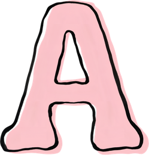
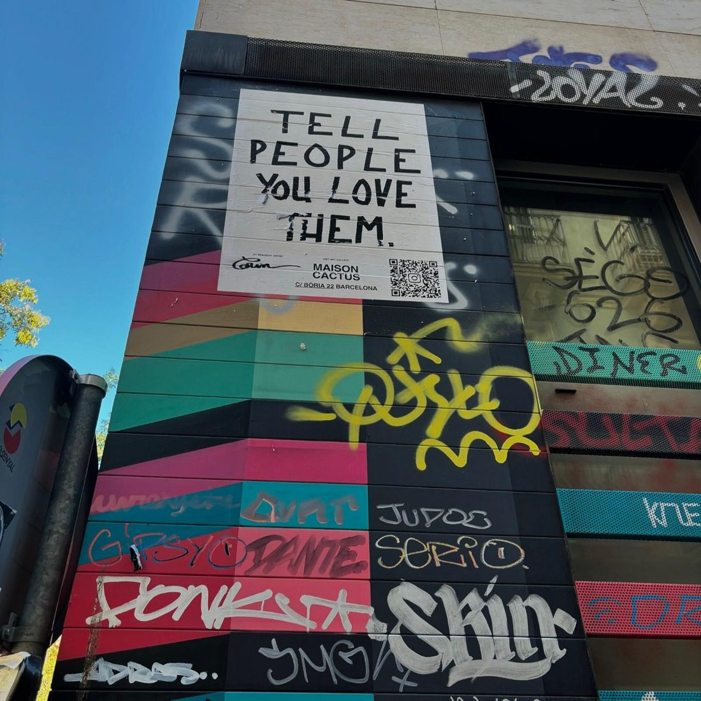

Blog de divulgación, desde enero de 2027
Antropologica-mente parlando
Una plataforma libre de divulgación, pensamiento crítico y análisis social, nacida desde el amor por la humanidad. Aquí la antropología sale de los márgenes académicos para hablar de la realidad, la cultura y la vida en comunidad, desde una mirada cultural, social, humanista, feminista y anticapitalista.
Temas que he vivido de cerca y otros que he investigado desde lejos, para pensar nuestras formas de habitar el mundo desde el cuidado.
